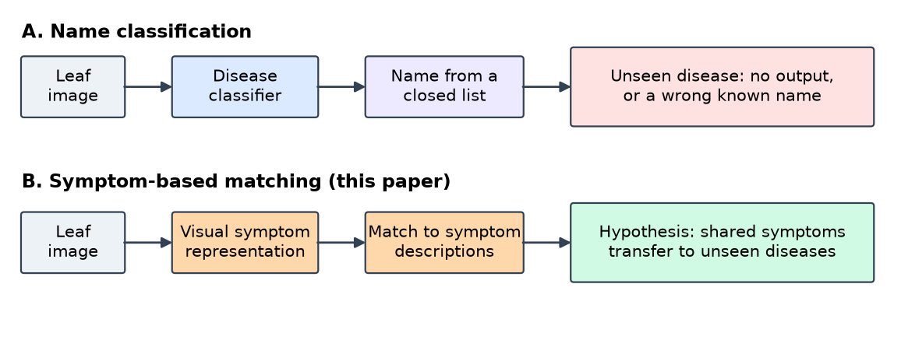
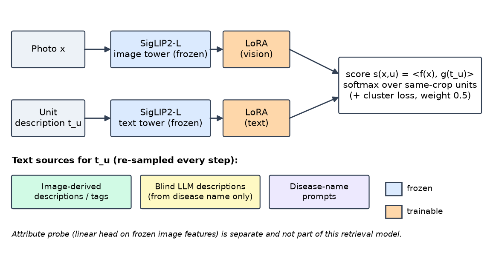
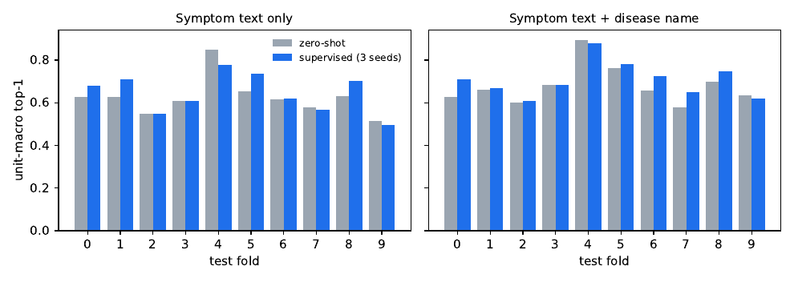
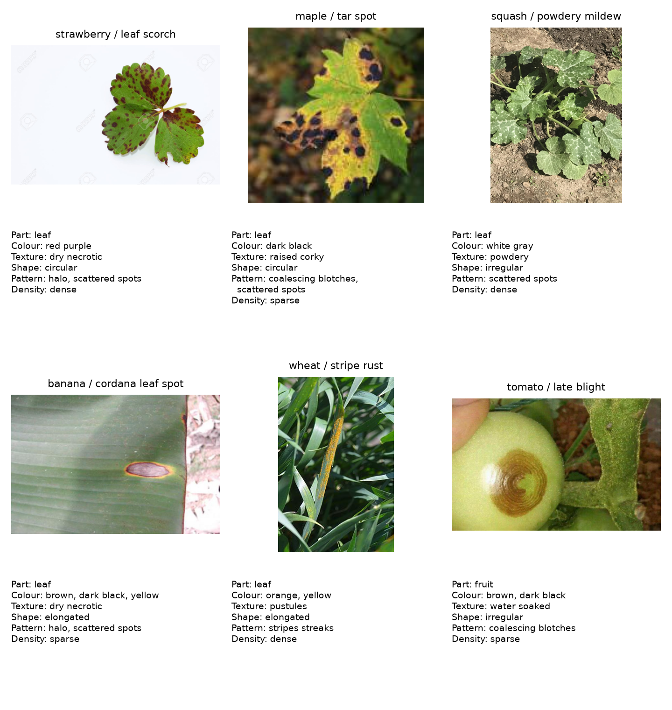

The idea
Most plant-disease classifiers output a disease name from a fixed list, so a disease outside the list gets no answer. Agronomists reason from symptoms instead: which part is affected, the colour and shape of lesions, their pattern. We annotate those symptoms per image and train a model to read them, so a new disease can be added as a text description.

Key numbers
How it works
We adapt both towers of SigLIP 2 with LoRA. Images are matched to descriptions built from symptom tags, never from disease names. The crop is given, and candidates are the diseases of that crop.

Held-out-disease accuracy
Top-1 on diseases never seen in training (3 seeds, 10-fold CV). Grey: zero-shot start. Green: joint LoRA.
| Text used to score a disease | Zero-shot | Joint LoRA | Gain |
|---|---|---|---|
| Description built from images | 0.625 | 0.684 | +0.059 |
| Blind LLM description | 0.561 | 0.609 | +0.048 |
| Blind tag list | 0.490 | 0.582 | +0.092 |
On an external farmer-photo test the gains are positive but not significant. Limits are discussed openly in the paper.

The annotations
Per-part annotation of every image, grouped by crop, disease and affected part, with symptom tags for each group. PlantWild photographs shown for illustration (CC BY-NC-ND); the repository releases annotations only.

What did not work
About a hundred earlier experiments shaped the final design. A few lessons:
Class-level symptom labels are too noisy
Symptom accuracy stayed at 0.24 to 0.30 nAP for every encoder. Class priors agree with a given photo only 43% to 80% of the time, which motivated per-image, group-level annotation.
Names are not what the model learns from
Name-free caption retrieval matches name prompts (83.0 vs 82.6 on unseen diseases in an early protocol).
Synthetic lesion edits do not help
Colour, size and compositional edits did not improve held-out-disease accuracy over real images only.
Crop recognition dominated early name accuracy
Giving the true crop raised accuracy to 62.6% from 8.6% (no crop) and 18.3% (predicted crop).
The full table is in Section 8 of the paper.
Citation
@misc{zibafar2026beyond,
title = {Beyond Disease Labels: Symptom-Based Vision-Language Learning for Unseen Plant Diseases},
author = {Zibafar, Amirreza},
year = {2026},
doi = {10.5281/zenodo.24032335},
note = {arXiv link to be added},
url = {https://github.com/AmirrrezaZ/plant-diagnose-anything}
}